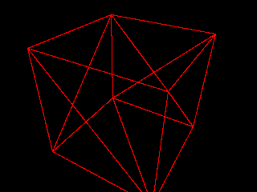
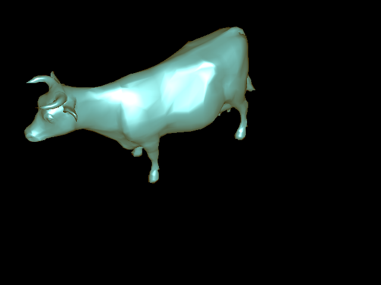
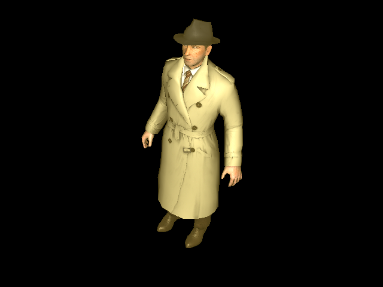
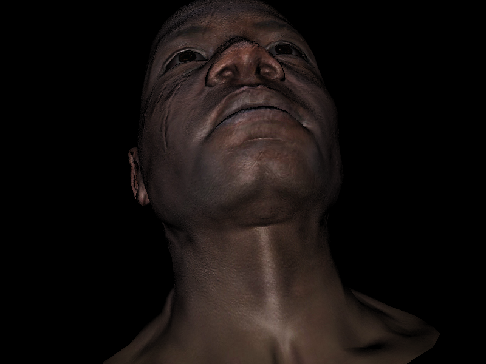

COS426 Assignment 4 — Rasterizer
Switch to: Interactive Renderer
that all images in this writeup were generated directly by my solution code or provided by the course staff (exception: art contest submissions may pass through intermediary software like GIMP)
that no other student has viewed my writeup explanations or my writeup images
that my solution code is my own work; particularly that my solution was not copied from any other student's solution code, and that no other student copied their solution directly code from me
that I did not discuss assignment specifics or view the solution code of any other student besides that of my (optional) partner
that I have followed all other course collaboration and course plagiarism policies as written on the course website.
Chandler Ault (cjault)
Collaborated with: Will Drury (wdrury)
Features Implemented:
- (2.0) Perspective Projection
- (1.0) Phong Reflection Model
- (1.0) Bounding Box
- (1.0) Barycentric Coordinates
- (2.0) Flat Shader
- (2.0) Gouraud Shader
- (2.0) Phong Shader
- (2.0) Diffuse and Specular Mapping
- (2.0) XYZ Normal Mapping
Perspective Projection
For my implementation of Perspective Projection, I closely utilized the code from the naive approach. I created a homogeneous vector and applied the viewmat matrix to it. Finally, I divided by the w factor and scaled the x and y coordinates using the width and height
respectively.
Camera=[2.8646,2.2455,1.5975];[0.47999,-0.82485,0.29873];[0,0,0]&Mesh=cube.obj;false&Resolution=320x240&Shading_Model=Wire&Ambient=[0,0,0]&Diffuse=[255,255,255]&Specular=[255,255,255]&Shininess=5

Phong Reflection Model
For phong reflction model, I closely followed the approach for the previous assignment. I added the ambient factor to the color and performed the necessary computations for the specular factor before adding it to the color as well.
Bounding Box
For calculating the bounding box, I simply too the maximum and minimum values of the x and y coordinates of all three points on the projected triangle. By doing this, I am ensured to look over exactly twice the number of pixels that are in the triangle. Not incredibly efficient, but not incredibly inefficient either.
Barycentric Coordinates
I utilized the formula form the link provided in the assignment description to calculate the Barycentric coordinates and checked whether any of these were negative. If so, return undefined. If not, return the weights associated with the side opposite the vertex.
Flat Shader
For this shader, I would take the average of the vertices and normal of the vertices to find the centroid of the triangle and the normal of the centroid. I would then calculate the color once before iterating through all the pixels in the bounding box and applying this color to them.
Camera=[-3.7257,4.6729,1.6024];[-0.62123,-0.64694,0.4422];[0,0,0]&Mesh=cow.obj;false&Resolution=640x480&Shading_Model=Flat&Ambient=#483c14&Diffuse=#2d87ac&Specular=#a2c9d2&Shininess=5
Gouraud Shader
The Gouraud shader had a slightly more difficult implementation than the flat shader, but most components were very similar. The primary difference is that for the Gouraud shader
I calculate the color values at each vertex and use those with the Barycentric weights to interpolate the color at each pixel in the bounding box.
Camera=[-3.7257,4.6729,1.6024];[-0.62123,-0.64694,0.4422];[0,0,0]&Mesh=cow.obj;false&Resolution=640x480&Shading_Model=Gouraud&Ambient=#483c14&Diffuse=#2d87ac&Specular=#a2c9d2&Shininess=5
Phong Shader
For Phong shading, once again the implementation was similar with a few key differences. I would use the barycentric weights to interpolate the vertex of the pixel as well as the normal and calculate the color accordingly
for each pixel. Thus, for every pixel I would call phong reflection model which makes it sightly less efficient than the alternatives, but gives a much smoother shading.
Camera=[-3.7257,4.6729,1.6024];[-0.62123,-0.64694,0.4422];[0,0,0]&Mesh=cow.obj;false&Resolution=640x480&Shading_Model=Phong&Ambient=#483c14&Diffuse=#2d87ac&Specular=#a2c9d2&Shininess=5

Diffuse and Specular Mapping
For diffuse and specular mapping, I would check if uvs was defined or not. If so, I would once again use the barycentric weights to interpolate the uv coordinates and then call getphongmaterial with these interpolated uv coordinates
before passing this material to calculate the color.
Camera=[-1.1618,1.5919,2.0102];[-0.35231,-0.82205,0.44734];[0,0,0]&Mesh=boggiebody.obj;true&Mesh=boggieeyes.obj;true&Mesh=boggiehead.obj;true&Resolution=640x480&Shading_Model=Phong&Ambient=#483c14&Diffuse=#2d87ac&Specular=#a2c9d2&Shininess=5

XYZ Normal Mapping
XYZ mapping was a simple addition to the Phong Shader. First, I would check if the xyzNormal of the material was undefined or not as well as if the height of the xyzNormal was non-zero (no need to look at the texture map in this case). If
it was defined, I would use the interpolated uv coordinates to find the new normal of the pixel before passing it to the color generator. I followed the equations detailed in the assignment description taking care to normalize the vector.
Camera=[0.24217,-1.1267,1.6445];[0.10907,-0.81248,-0.5727];[0,0,0]&Mesh=afrhead.obj;true&Mesh=afreye.obj;true&Resolution=800x600&Shading_Model=Phong&Ambient=[0,0,0]&Diffuse=[255,255,255]&Specular=[255,255,255]&Shininess=5
